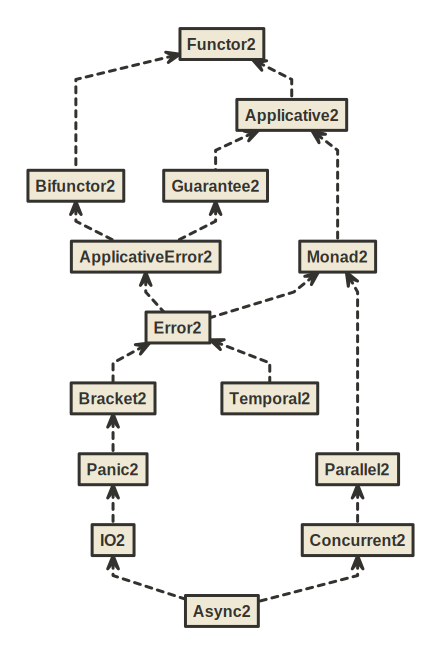
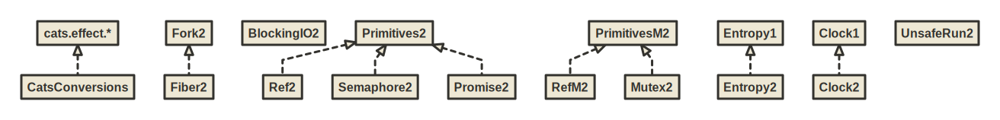
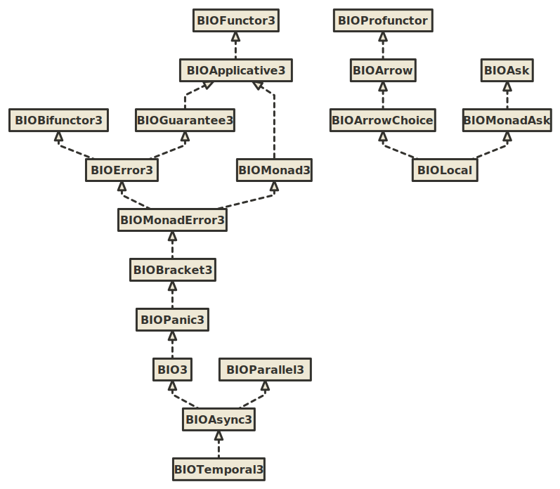

BIO Hierarchy
BIO is a set of typeclasses and algebras for programming in tagless final style using bifunctor effect types with variance.
Key syntactic features:
- Ergonomic
Fsummoner that is a single point of entry to all methods in the hierarchy - Import-less syntax. Syntax is automatically available whenever any typeclass from the hierarchy is imported, e.g. immediately after IDE auto-import.
These syntactic features allow you to write in a low ceremony, IDE-friendly and newcomer-friendly style:
import izumi.functional.bio.{F, Monad2, Primitives2}
def adder[F[+_, +_]: Monad2: Primitives2](i: Int): F[Nothing, Int] =
F.mkRef(0)
.flatMap(ref => ref.update(_ + i) *> ref.get)
Key semantic features:
- Typed error handling with bifunctor effect types
- Automatic conversions to equivalent
cats.effectinstances usingimport izumi.functional.bio.catz._ - No ambiguous implicit errors. It’s legal to have both
Monad2andApplicative2as constraints, despite the fact thatMonad2provides anApplicative2. - Primitive concurrent data structures:
Ref,Promise,Semaphore
To use it, add fundamentals-bio library:
libraryDependencies += "io.7mind.izumi" %% "fundamentals-bio" % "1.1.1-SNAPSHOT"
If you’re using Scala 2.12 you must enable -Ypartial-unification and either -Xsource:2.13 or -Xsource:3 for this library to work correctly:
// REQUIRED options for Scala 2.12
scalacOptions += "-Ypartial-unification"
scalacOptions += "-Xsource:2.13" // either this
// scalacOptions += "-Xsource:3" // or this
Most likely you’ll also need to add Kind Projector plugin:
addCompilerPlugin("org.typelevel" % "kind-projector" % "0.13.2" cross CrossVersion.full)
Overview
The following graphic shows the current BIO hierarchy.

{kind=link}
Auxiliary algebras:

{kind=link}
Raw inheritance hierarchy:

{kind=link}
Syntax, Implicit Punning
All implicit syntax in BIO is available automatically without wildcard imports with the help of so-called “implicit punning”, as in the following example:
import izumi.functional.bio.Monad2
def loop[F[+_, +_]: Monad2]: F[Nothing, Nothing] = {
val unitEffect: F[Nothing, Unit] = Monad2[F].unit
unitEffect.flatMap(_ => loop)
}
Note: a .flatMap method is available on the unitEffect value of an abstract type parameter F, even though we did not import any syntax implicits using a wildcard import.
The flatMap method was added by the implicit punning on the Monad2 name. In short, implicit punning just means that instead of creating a companion object for a type with the same name as the type, we create “companion” implicit conversions with the same name. So that whenever you import the type, you are also always importing the syntax-providing implicit conversions.
This happens to be a great fit for Tagless Final Style, since nearly all TF code will import the names of the used typeclasses.
Implicit Punning for typeclass syntax relieves the programmer from having to manually import syntax implicits in every file in their codebase.
cats-effect compatibilty
Import izumi.functional.bio.catz._ for shim compatibilty with cats-effect. You can run http4s and all the other cats-effect libraries with just BIO typeclasses, without requiring any cats-effect typeclasses.
Data Types
Ref2, Promise2 and Semaphore2 provide basic concurrent mutable state primitives. They require a Primitives2 capability to create. With Primitiives2[F] in implicit scope, use F.mkRef/F.mkPromise/F.mkSemaphore respectively. (See also example at top of the page)
Free monad, as well as FreeError and FreePanic provide building blocks for DSLs when combined with a DSL describing functor.
Morphism1/2/3 provide unboxed natural transformations for functors with 1,2,3-arity respectively, with Isomorphism1/2/3 modeling two-way transformations.
Misc Capabilities
Clock1/2/3 gives access to current time.
Entropy1/2/3 models random numbers.
UnsafeRun2 allows executing effects (it is required for conversion to cats’ ConcurrentEffect which also allows unsafe running)
Examples
distage-example is a full example application written in Tagless Final Style using BIO typeclasses.
You may also find a video walkthrough of using BIO on Youtube by DevInsideYou — Tagless Final with BIO
Removal of trifunctor hierarchy
Since version 1.2.0 the trifunctor hierarchy has been removed, due to the fact that since ZIO version 2.0 they cannot be implemented for ZIO and also because of lack of use.
See details in https://github.com/7mind/izumi/issues/2026